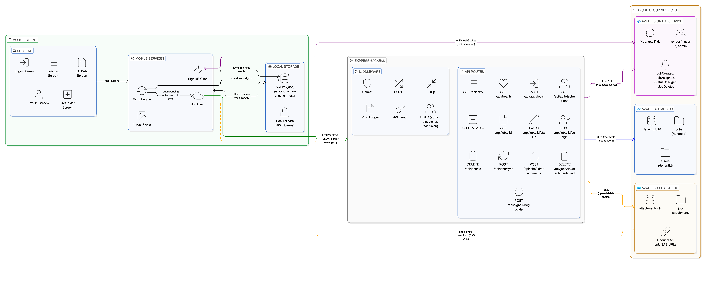
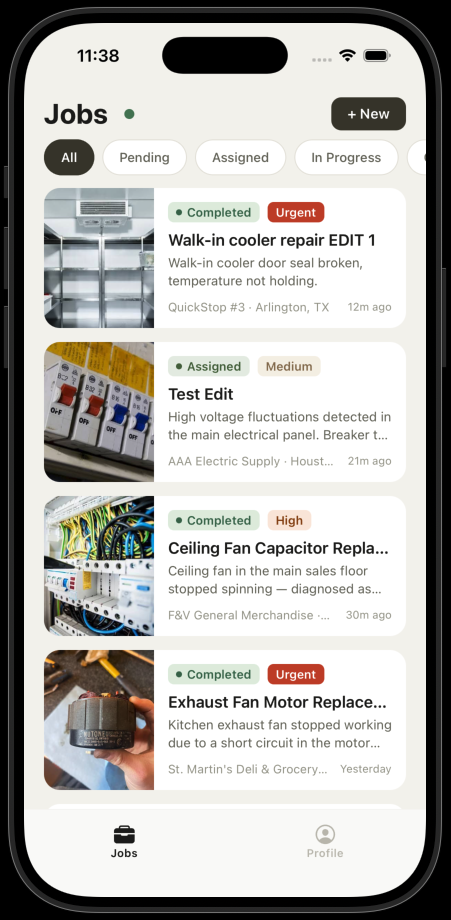
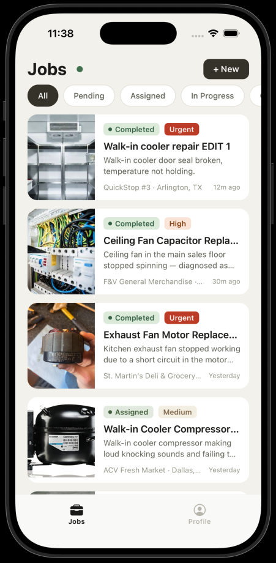
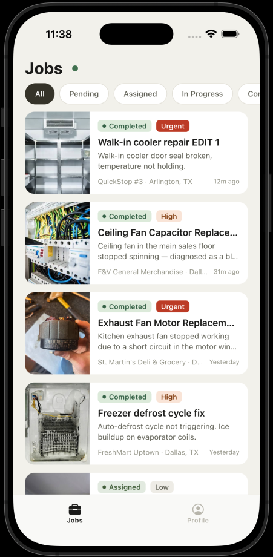
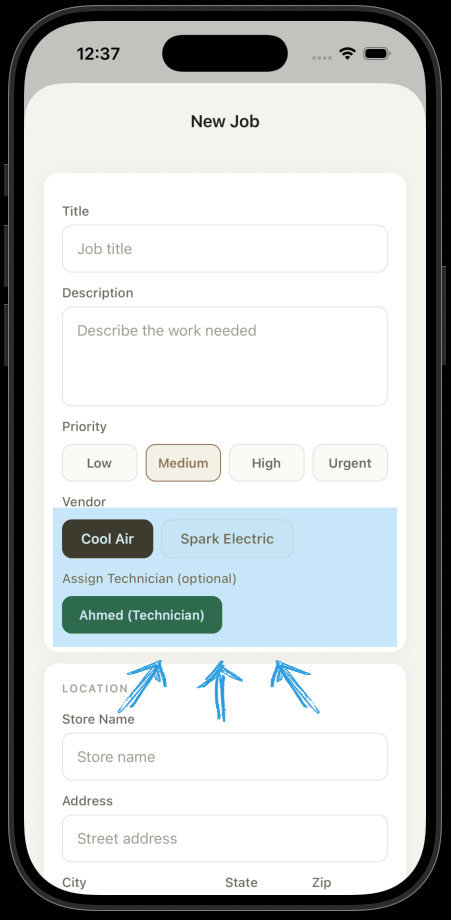

A mobile-first field service platform with offline-first sync, real-time updates, role-based access, and conflict resolution — built with React Native, Express, and Azure.
* Disclaimer: This page is a technical showcase of a real-world application architecture built for a client.
The mobile app communicates with an Express backend, which orchestrates Azure Cosmos DB for data, Blob Storage for photos, and SignalR for real-time push notifications.

Admin creates a job on one device — it instantly appears on the technician's device without any manual refresh. When the admin assigns a job or changes its status, the technician's screen updates in real-time through a persistent WebSocket connection powered by Azure SignalR Service.
The backend doesn't manage WebSocket connections directly. Instead, it makes a single REST API call to SignalR, which broadcasts to the right users based on their group membership. This keeps the Express server stateless and simple.
vendor-{id}, user-{id}, or admin — only the right people get each updateThe app works fully without internet. Turn on airplane mode, create new jobs, update statuses, browse your job list — everything is instant because every screen reads from a local SQLite database on the device, not the network.
Changes made offline are queued in a pending_actions table and processed
in order when connectivity returns. The status bar dot turns red when offline and
shows a pending count badge. On reconnect, a full sync drains the queue (writes first),
then pulls the latest data from the server using a delta sync protocol — only fetching
jobs that changed since the last sync to save bandwidth.
Two users open the same job at the same time. User A edits the title and saves — it succeeds.
User B then tries to save their changes, but the server rejects them with a 409 Conflict
because the job's version tag (_etag) no longer matches.
This is optimistic concurrency control — instead of locking records (which would block other users), we let everyone read freely and only check for conflicts at write time. The user is never left in the dark: they see a clear error and can refresh to get the latest version before retrying. No data is silently lost or overwritten.
_etag that changes on every write — acts as a version stamp_etag — server compares it before applying changesSame app, three logins, three completely different experiences. Every API endpoint, every button, and every piece of data is filtered by the user's role.



role, vendorId, userId claims — signed server-sidetenantId partition key provides vendor isolation at the database levelWHERE assignedTo = @userId
When an admin creates a new job, they don't type a vendor ID — they pick a vendor by name from a visual selector. The moment a vendor is chosen, the technician list automatically filters to show only technicians belonging to that vendor.
This prevents mistakes like assigning a "Cool Air" technician to a "Spark Electric" job.
The admin can optionally select a technician and the job is created and assigned in a single
step — two API calls (POST /api/jobs then POST /api/jobs/:id/assign)
happen seamlessly behind the scenes.
Dispatchers see a simpler version: their vendor is pre-selected and locked, so they can only create jobs for their own company.
GET /api/auth/vendors returns vendor names derived from dispatcher profiles in Cosmos DBGET /api/auth/technicians?vendorId= dynamically filters technicians by the selected vendorvendorId claim — cannot be changed client-sideTechnicians document their work by taking photos directly from the app — either from the camera or photo gallery. Photos upload to Azure Blob Storage and immediately appear in the job's photo carousel. Other users (admin, dispatcher) can view these photos from their own devices.
Photos are never stored in the database. Only metadata (filename, size, upload date) lives in Cosmos DB. The actual image files sit in Blob Storage, and every time someone views a photo, the backend generates a temporary SAS URL that expires after 1 hour — so there are no permanent public links to any photo.
expo-image-picker → FormData (multipart) → multer on backend → @azure/storage-blob{tenantId}/{jobId}/{attachmentId}.{ext} — organized by vendor and job for easy managementattachments[] array using a single atomic operationWritten responses to the assessment questions, grounded in the actual FacilitySync implementation above.
Which actions should never be fully automatic on mobile, and why?
In FacilitySync, several actions require explicit human confirmation because their consequences are difficult or impossible to reverse, or because they affect real-world commitments and money:
Forced vendor reassignment should never be automatic. Reassigning a job from one vendor to another means cancelling a contractual commitment with the first vendor and creating one with the second. If this happened silently — say, triggered by a load-balancing algorithm — it could send a technician to a site where they have no context, or leave the original vendor's dispatcher unaware. In FacilitySync, only admins and dispatchers can assign jobs, and the action requires a deliberate tap on a specific technician from a filtered list. There is no automatic dispatch algorithm.
Job deletion is restricted to admins and always requires confirmation through an alert dialog. A deleted job cannot be recovered (it is removed from Cosmos DB and SQLite). If a technician or dispatcher could delete jobs, it would destroy audit trails. In the current implementation, even admins only see the delete option on completed or cancelled jobs — active jobs cannot be deleted.
Job cancellation requires explicit user action because it reverses a commitment. A technician might already be en route. The app requires a tap on "Cancel" followed by an alert confirmation. Technicians cannot cancel at all — only admins and dispatchers can.
Bulk data operations (data purges, mass status changes) are not exposed in the mobile app at all. These would need a separate admin web console with audit logging. The mobile interface is intentionally limited to single-job operations to prevent accidental mass actions on a small touch screen.
The general principle: any action that affects another person's workflow, cannot be undone, or has financial/contractual implications must require a deliberate tap with a confirmation step. Automation is appropriate for reading and syncing — never for destructive writes.
How do you detect sync/conflict problems from offline clients? What is your conflict resolution strategy?
FacilitySync uses optimistic concurrency control via Cosmos DB's _etag field. Every document in Cosmos DB has an _etag that changes on every write. When the mobile app sends an update (PATCH request), it must include the _etag it last read. The backend passes this to Cosmos DB as an if-match condition. If the document was modified by someone else in the meantime, Cosmos DB rejects the write with a 412 Precondition Failed, which the backend translates to an HTTP 409 Conflict.
For online users, conflict detection is immediate. Both users have the job open, both have the same _etag. The first save succeeds and generates a new _etag. The second save fails with 409, and the app displays "This job was modified by another user. Please refresh and try again." The user can pull-to-refresh to get the latest version (with the winner's changes) and re-apply their edits.
For offline users, the conflict path is more nuanced. When a user changes a job's status while offline, the action is queued in SQLite's pending_actions table with the _etag that was current at the time of the offline action. When connectivity returns, the sync engine drains the queue in FIFO order. If any action hits a 409, the sync engine marks that job's syncStatus as 'conflict' in SQLite and removes the action from the queue. The UI can then surface these conflict markers to the user.
Why not last-writer-wins? Because in a field service app, statuses have real-world meaning. If one user marks a job as "completed" and another marks it as "cancelled," automatically picking the last write could result in a technician being paid for work that was cancelled, or a completed job being silently undone. The safer approach is to reject the second write and let a human decide.
Why not automatic merge? For the same reason. Merging two conflicting edits to a job's title or description might produce a coherent result, but merging two conflicting statuses is logically impossible. Rather than having two strategies (merge for some fields, reject for others), the app uses a single consistent policy: reject and notify.
The sync engine also performs a full resync every 5th cycle (and immediately on reconnect) by clearing locally cached 'synced' jobs and re-fetching from the server. This catches server-side deletions that delta sync would miss, since there is no way to express "this document was deleted since timestamp X" in a pull-based delta protocol without a separate tombstone mechanism.
What event instrumentation is required to keep mobile workflows reliable? Which metrics and traces are critical?
The system emits several categories of events that are essential for operational visibility:
Job lifecycle events — JobCreated, JobAssigned, JobStatusChanged, JobDeleted. These are broadcast via SignalR to keep all connected clients in sync. On the backend, each event is logged with the acting user's ID, role, the previous and new state, and a timestamp. This creates an audit trail: you can reconstruct exactly who changed a job's status and when.
Sync events — ClientSyncStarted, ClientSyncCompleted, SyncConflictDetected. The sync engine tracks how many actions were processed, how many failed, how many jobs were synced, and which job IDs hit 409 conflicts. These metrics, if sent to a monitoring backend (e.g., Azure Application Insights), would reveal patterns like "User X has had 5 conflicts in the last hour" which may indicate a workflow problem rather than a technical one.
Connectivity events — ClientWentOffline, ClientReconnected, SignalRConnected, SignalRDisconnected. These are tracked locally via the OfflineContext's state machine and could be reported to analytics. They're critical for understanding field conditions: if 40% of technicians are offline at any given time, the system needs to be optimized for offline-first more aggressively.
Critical metrics for troubleshooting latency:
API response time per endpoint — especially POST /api/jobs/sync (the delta sync endpoint) because it's called every 4–10 seconds by every active client. If this endpoint's P95 exceeds 500ms, the polling interval should be widened or the query optimized. SignalR message delivery time — the gap between the backend's REST call to SignalR and the client receiving the push. This is largely controlled by Azure but can degrade under load. Sync cycle duration — how long it takes to drain the action queue + pull delta updates. If this exceeds 3 seconds consistently, offline users coming back online will experience a noticeable delay. Conflict rate — a sudden spike in 409s may indicate a UX problem (e.g., two dispatchers managing the same vendor's jobs) rather than a technical failure.
On the backend, the Express app uses pino-http for structured JSON logging on every request, including method, path, status code, response time, and the authenticated user's ID and role. This makes it possible to trace a specific user's actions through the system using their userId as a correlation key.
How should the mobile app behave when backend services are unavailable or slow?
FacilitySync is designed to be fully functional without a backend. The core principle is: every screen reads from local SQLite, never directly from the network. This means if the backend goes down entirely, the user can still browse their job list, view job details, and see all previously synced data. The app does not show a blank screen or a loading spinner that never resolves.
Offline detection uses three complementary signals. First, the @react-native-community/netinfo listener detects OS-level connectivity changes instantly (WiFi off, airplane mode). Second, a bidirectional health poll hits GET /api/health every 3 seconds — this catches scenarios where the device has WiFi but the backend is unreachable (server down, DNS failure, firewall). The poll requires 2 consecutive failures before transitioning to offline, preventing false positives from a single dropped packet. Third, when the app returns to the foreground after being backgrounded, it immediately re-checks connectivity via NetInfo.
Write operations while offline are queued rather than rejected. When a user creates a job or changes a status offline, the action is written to the pending_actions table in SQLite with the full payload and a retry counter. The UI shows a pending count badge so the user knows they have unsynced changes. When connectivity returns, the sync engine drains the queue in FIFO order (writes before reads), ensuring that the user's changes are sent to the server before pulling new data.
If an individual action fails (not due to connectivity), the sync engine increments a retry counter and records the error message. After 3 failed attempts, the action is removed from the queue and the job is marked with a 'conflict' sync status so the user can investigate. This prevents a single poisoned action from blocking the entire queue.
Network timeouts are handled differently from application errors. If an action fails because the request timed out, the sync engine stops processing the queue immediately (rather than continuing to the next action) because a timeout suggests the network is too slow or the backend is overloaded. It will retry on the next sync cycle.
SignalR reconnection uses exponential backoff: 2s → 4s → 8s → 15s → 30s. If the WebSocket connection drops, the app falls back to polling (every 4 seconds instead of the 10-second interval used when SignalR is active). This ensures real-time-ish updates continue even without the push channel. When SignalR reconnects, the polling interval automatically widens back to 10 seconds to reduce unnecessary network traffic.
Visual feedback is immediate and honest. The status bar shows a colored dot: green (online + SignalR connected), amber (online but SignalR disconnected, polling mode), red (offline). Pending action count is shown as a badge. Edit screens disable the save button when offline with a clear message: "Editing requires an internet connection." The user is never left guessing about the state of their connection or their data.
Offline sync resilience: The full-sync-every-5th-cycle mechanism acts as a self-healing protocol. Even if a SignalR message is lost or a delta sync response is corrupted, the system will correct itself within 5 sync cycles (~20–50 seconds depending on the polling interval). On reconnect after offline, a forced full sync runs immediately to catch all changes including server-side deletions.
Cost optimization for high-read workloads: The delta sync protocol (POST /api/jobs/sync with a since timestamp) ensures that most sync calls return an empty array — only changed jobs since the last sync are transferred. This drastically reduces Cosmos DB RU consumption compared to fetching all jobs on every poll. Cosmos DB's _ts field is indexed by default, making the range query efficient. SAS URLs for photo attachments let the mobile client download images directly from Blob Storage, bypassing the Express backend entirely — this offloads bandwidth from the app server.
Scaling strategy: The Express backend is stateless — it holds no WebSocket connections (SignalR is in serverless mode) and no session state. This means it can be horizontally scaled behind Azure App Service's autoscaler or deployed as multiple container instances. Cosmos DB scales independently via RU provisioning. SignalR Service scales via its own unit-based tier. The three services scale independently based on their specific bottleneck (compute, storage IOPS, or concurrent connections).